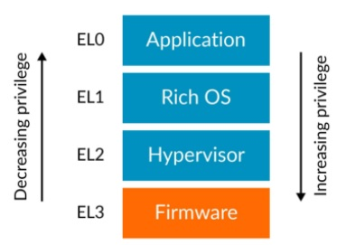
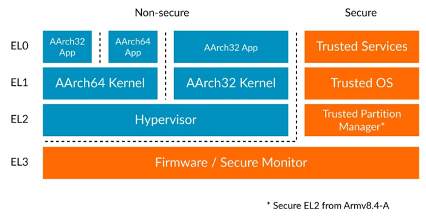
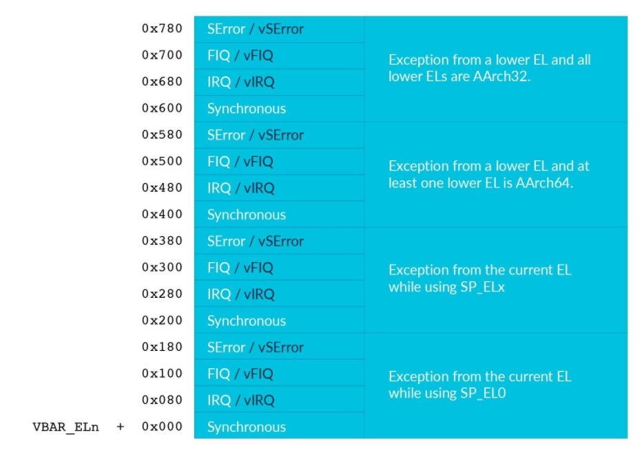

AArch64 Exception Model
原文链接：https://developer.arm.com/documentation/102412/0102/Privilege-and-Exception-levels
1 Overview
本指南介绍 Armv8-A 和 Armv9-A 中的异常和特权模型。本指南涵盖了 Arm 架构中不同类型的异常，以及处理器在收到异常时的行为。
本指南适用于底层代码的开发人员，例如引导代码或驱动程序。
2 Privilege and Exception levels
Arm的权限等级，只能在发生Exception，或者从Exception返回的时候才能改变。所以Privilege Level又叫Exception Level(EL)。
异常等级叫做EL<x>，x在0到3之间。数字越大代表权限越高。

通常EL0运行用户程序，EL1运行操作系统，EL2运行hypervisor，EL3为低级的固件和安全代码保留。这并不是强制的，但是算是约定俗成的。
Types of privilege
有两种权限的种类。他们都被当前的权限等级影响。
- 内存系统中的权限
- 获取处理器资源的权限。
Memory Privilege
Arm 架构的 A-profile 实现了一个虚拟内存系统，其中的MMU允许软件将属性分配给内存区域，比如read/write permission。这种配置允许 privileged access 和 unprivileged access的单独访问权限。
在EL0权限的内存访问将进行unprivileged access权限检查，EL1, EL2, EL3权限的内存访问将进行privileged access权限检查。
因为这个memory configuration，是由软件通过修改 MMU的转换表（页表）决定的。因此您应该考虑对这些表进行编程所需的特权。memory configuration保存在System registers中，访问System registers的能力受当前的权限控制。
Register Access
ARMv8-A 处理器的 Configuration settings 保存在一系列寄存器中，也就是 System registers。System registers中的设置组合定义了当前处理器的Context，访问System registers的能力受当前的权限控制。
System registers的名字指示了可以访问它的最低的Exception level。比如，TTBR0_EL1寄存器保存了被EL0和EL1使用的Translation Table（页表）的基地址，而他不能被EL0访问，否则会造成exception。
ARM架构有许多相似功能的寄存器，它们的名称仅在它们的异常级别后缀上有所不同。他们是相互独立的不同的寄存器，在硬件中有不同的实现，在指令集中有他们自己的编码。比如，下面列出的寄存器负责MMU 不同翻译策略的configuration
SCTLR_EL1- Top level system control for EL0 and EL1SCTLR_EL2- Top level system control for EL2SCTLR_EL3- Top level system control for EL3
高Exception Level可以访问低Exception Level的System register。比如EL2就可以访问SCTLR_EL1
3 Execution and Security states
The current state of an Armv8-A or Armv9-A processor is determined by the Exception level and the current Execution state. Current Execution state 定义了通用寄存器的标准宽度和可用的指令集。
Execution state也影响了 memory models和异常的处理。
Current Security State控制了哪些Exception Levels在当前是合法的，哪些内存是可以访问的，以及这些访问在系统内存总线上的表示方式。
这张图展示了使用了不同的Execution states的Exception Levels和Security states。

Execution states
Armv8-A 有两种可用的 Execution states:
- AArch32: 32 位Execution states。此状态下的操作与 Armv7-A 兼容。有两个可用的指令集: T32 和 A32。标准寄存器宽度为 32 位。
- AArch64: 64 位Execution states。有一个可用的指令集：A64。标准寄存器宽度为 64 位。
Armv8-A 处理器在给定的异常级别支持哪些Execution states是由实现定义的。例如：
- Cortex-A35 在所有Exception Level都支持 AArch32 和 AArch64。
- Cortex-A32 仅支持 AArch32。
Security state
Armv8-A 架构允许实现两种Security state。这允许进一步划分软件以隔离和划分受信任的软件。分别是
- Secure state: 在这种状态下， Processing Element(PE) 可以访问安全和非安全物理地址空间。在这种状态下，PE 可以访问安全和非安全系统寄存器。在这种状态下运行的软件只能接收安全中断。
- Non-secure state: 在这种状态下，PE 只能访问非安全物理地址空间。PE 也只能访问允许非安全访问的系统寄存器。在这种状态下运行的软件只能接收非安全中断。
更详细参考：TrustZone for Armv8-A
Realm Management Extension
略
Changing Execution state
略
Changing Security state
略
Implemented Exception levels and Execution states
略
4 Exception Types
Exception是 任何可以引起当前正在执行的程序suspended，转而去执行异常处理代码 的事件。在其他的架构中这可能叫做Interrupt。在 Armv8-A 和 Armv9-A 中，Interrupt是外部引发的Exception。ARM架构将Exception分为两种： synchronous exceptions(同步异常) 和 asynchronous exceptions.(非同步异常)
Synchronous exceptions
同步异常是由最近执行的一条指令引起或与之相关的exception。也就是说同步异常和控制流是同步的。
同步异常可能由 execute an invalid instruction(执行非法指令) 引起。有可能是被禁止的指令，也可能是不被当前的Exception Level允许的指令。
同步异常可能由 memory access(内存访问) 引起，可能是不对齐的内存，叶铿是没有通过MMU的权限检查。内存访问也可能引起非同步异常，在后面提及。
ARM还有一系列专门用来产生异常的指令：SVC, HVC, SMC。他们针对不同的Exception Level。他们可以用来实现系统调用，允许低权限的代码向高权限获取服务。
Debug Exception也是同步异常。
Asynchronous exceptions
某些类型的异常是在外部生成的，因此与当前指令流不同步。这意味着无法准确保证何时会发生异步异常。Armv8-A 架构只要求它在有限的时间内发生。也可以暂时屏蔽非同步异常。这意味着非同步异常可以在处理异常之前处于挂起状态。
非同步异常有下面几种：
物理中断
- SError (System Error)
- IRQ
- FIQ
虚拟中断
- vSError (Virtual System Error)
- vIRQ (Virtual IRQ)
- vFIQ (Virtual FIQ)
物理中断是响应 PE 外部产生的信号而产生的。虚拟中断可以由外部产生，也可以由在 EL2 处执行的软件产生。
IRQ and FIQ
Arm 架构有两种异常类型，IRQ 和 FIQ，旨在用于生成外设中断。在旧版本的 Arm 架构中，FIQ 被用作更高优先级的快速中断。这与 Armv8-A 和 Armv9-A 不同，其中 FIQ 与 IRQ 具有相同的优先级。
IRQ 和 FIQ 具有独立的路由控制，通常用于实现安全和非安全中断。
Non-maskable interrupts
略
SError
略
5 Handling exceptions
当异常发送时，当前程序的控制流被中断。PE将会更新current state，并且跳转到vector table中的地址。通常这个地址，保存着保存current state到栈上然后再跳转到进一步处理的程序的代码。
Exception terminology
Taking an Exception
Routing asynchronous exceptions
Returning from an exception
在AArch64中，软件可以通过执行ERET指令从异常中返回。这将会导致Exception level返回到SPSR_ELx定义的值，其中的x是当前的Exception Level。SPSR_ELx保存这将要返回到的Exception Level以及Execution State。
注意SPSR_ELx中指定的Execution State必须匹配SCR_EL3.RW或HCR_EL2.RW中的任意一个，否则将会产生一个illegal exception return。
在ERET指令的执行过程中，state会从SPSR_ELx恢复，而PC将会被更新为ELR_ELx中存储的值。这两个更新是原子进行的，防止PE处于一个未定义的状态。
Exception Stacks
在AArch64中，架构有两个栈寄存器可用SP_EL0和SP_ELx，x是当前的Exception Level。比如EL1允许使用SP_EL0或者SP_EL1。
在一般情况下，所有的代码都使用SP_EL0。当处理异常的时候，SP_ELx被选择，这允许我们为异常的处理维护一个单独的栈。这对于在处理堆栈溢出引起的异常时维护有效堆栈很有用。
6 The vector tables
vector table是一个普通的内存区域，里面是若干指令。PE在System Register中保存Table的基地址，每一个异常种类都有从该基地址定义的偏移量。
每个Exception Level都有自己的vector table，由Vector Base Address RegisterVBAR_ELx寄存器定义，其中 <x> 是 1、2 或 3。
VBAR 寄存器的值在复位后未定义，因此必须在启用中断之前对其进行配置。
向量表的格式如下

7 Check your knowledge
The following questions will help you test you knowledge:
-
What Exception levels are implemented in Armv8-A?
EL0 and EL1 are mandatory. EL2 and EL3 are optional but implemented by most designs.
-
What are the Execution states?
AArch32 and AArch64
-
Which stack is used on exception entry?
SP_ELxis automatically selected to provide a safe exception stack. -
How are the vector tables implemented in AArch64
The PE holds the base address of the table in
VBAR_ELx. The table itself is instruction memory.
SP_ELx: 栈寄存器
VBAR_ELx: 异常向量表基地址寄存器